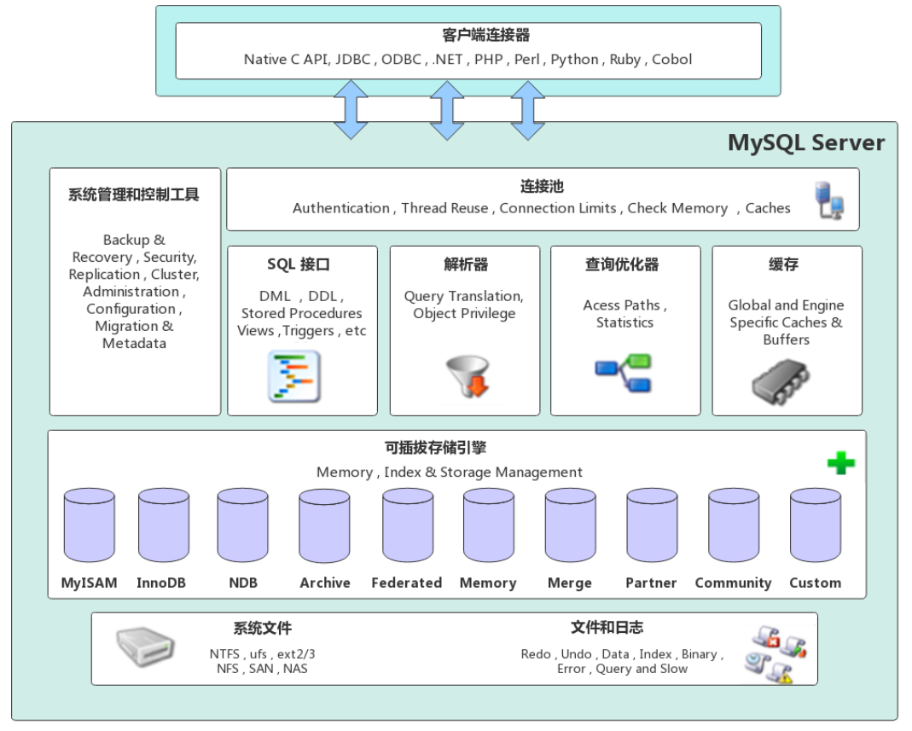

Ch01-MySQL 介绍
February 25, 2018
MySQL 是一个关系型数据库管理系统，由瑞典 MySQL AB 公司开发，属于 Oracle 旗下产品。MySQL 是最流行的关系型数据库管理系统之一，在 WEB 应用方面，MySQL 是最好的 RDBMS (Relational Database Management System，关系数据库管理系统) 应用软件之一。
1. 基本信息 #
| 条目 | 说明 |
|---|---|
| 官网 | https://www.mysql.com/ |
| 下载地址 | https://dev.mysql.com/downloads/mysql/ |
2. 架构组成 #
下图展示了 MySQL 的架构图，我们可以看出 MySQL 的架构自顶向下大致可以分为网络连接层、数据库服务层、存储引擎层和系统文件层四大部分。

2.1 网络连接层 #
网络连接层位于整个 MySQL 体系架构的最上层，主要担任客户端连接器的角色。提供与 MySQL 服务器建立连接的能力，几乎支持所有主流的服务端语言，例如：Java、C、C++、Python 等，各语言都是通过各自的 API 接口与 MySQL 建立连接。
2.2 数据库服务层 #
| 条目 | 说明 |
|---|---|
| 系统管理和控制工具 | 提供数据库系统的管理和控制功能，例如对数据库中的数据进行备份和恢复，保证整个数据库的安全性，提供安全管理，对整个数据库的集群进行协调和管理等。 |
| 连接池 | 主要负责存储和管理客户端与数据库的连接信息，连接池里的一个线程负责管理一个客户端到数据库的连接信息。 |
| SQL 接口 | 主要负责接收客户端发送过来的各种 SQL 命令，并将 SQL 命令发送到其他部分，并接收其他部分返回的结果数据，将结果数据返回给客户端。 |
| 解析器 | 主要负责对请求的 SQL 解析成一棵“语法树”，然后根据 MySQL 中的一些规则对“语法树”做进一步的语法验证，确认其是否合法。 |
| 查询优化器 | 在 MySQL 中，如果“语法树”通过了解析器的语法检查，此时就会由优化器将其转化为执行计划，然后与存储引擎进行交互，通过存储引擎与底层的数据文件进行交互。 |
| 缓存 | MySQL 的缓存是由一系列的小缓存组成的。例如：MySQL 的表缓存，记录缓存，MySQL 中的权限缓存，引擎缓存等。MySQL 中的缓存能够提高数据的查询性能，如果查询的结果能够命中缓存，则 MySQL 会直接返回缓存中的结果信息。 |
2.3 存储引擎层 #
MySQL 中的存储引擎层主要负责数据的写入和读取，与底层的文件进行交互。值得一提的是，MySQL 中的存储引擎是插件式的，服务器中的查询执行引擎通过相关的接口与存储引擎进行通信，同时，接口屏蔽了不同存储引擎之间的差异。MySQL 中，最常用的存储引擎就是 InnoDB 和 MyISAM。
| 条目 | InnoDB | MyISAM |
|---|---|---|
| 事务支持 | 支持 | 不支持 |
| 存储结构 | 所有的表都保存在系统表空间，或者每张表各自的表空间 | 每张表在磁盘上存储成三个文件 |
| 存储空间 | 需要更多的内存和存储，在主内存中建立其专用的缓冲池用于高速缓冲数据和索引 | 可被压缩，存储空间较小 |
| 表锁差异 | 支持事务和行级锁 | 只支持表级锁 |
| 全文索引 | 不支持 (FULLTEXT 类型的) 全文索引，但是 innodb 可以使用 sphinx 插件支持全文索引，并且效果更好 | 支持 (FULLTEXT 类型的) 全文索引 |
| 主键 | 如果没有设定主键或者非空唯一索引，就会自动生成一个 6 字节的主键 (用户不可见)，数据是主索引的一部分，附加索引保存的是主索引的值 | 允许没有任何索引和主键的表存在，索引都是保存行的地址 |
| 外键 | 支持 | 不支持 |
2.4 系统文件层 #
系统文件层主要包括 MySQL 中存储数据的底层文件，与上层的存储引擎进行交互，是文件的物理存储层。其存储的文件主要有：日志文件、数据文件、配置文件、MySQL 的进行 pid 文件和 socke
| 条目 | 说明 |
|---|---|
| 日志文件 | 包括错误日志、通用查询日志、二进制日志、慢查询日志等 |
| 数据文件 | db.opt 文件、frm 文件 (MySQL 8.0 无此文件)、MYD 文件、MYI 文件、ibd 文件、ibdata 文件、ibdata1 文件、ib_logfile0 和 ib_logfile1 文件等。 |
| 配置文件 | 在Unix/Linux环境中是my.cnf文件，在 Windows 环境中是my.ini文件。 |
| pid 文件 | pid 文件是存放 MySQL 进程运行时的进程号的文件 |
| socket 文件 | socket 文件和 pid 文件一样，都是 MySQL 在 Unix/Linux 环境中运行才会有的文件。 |